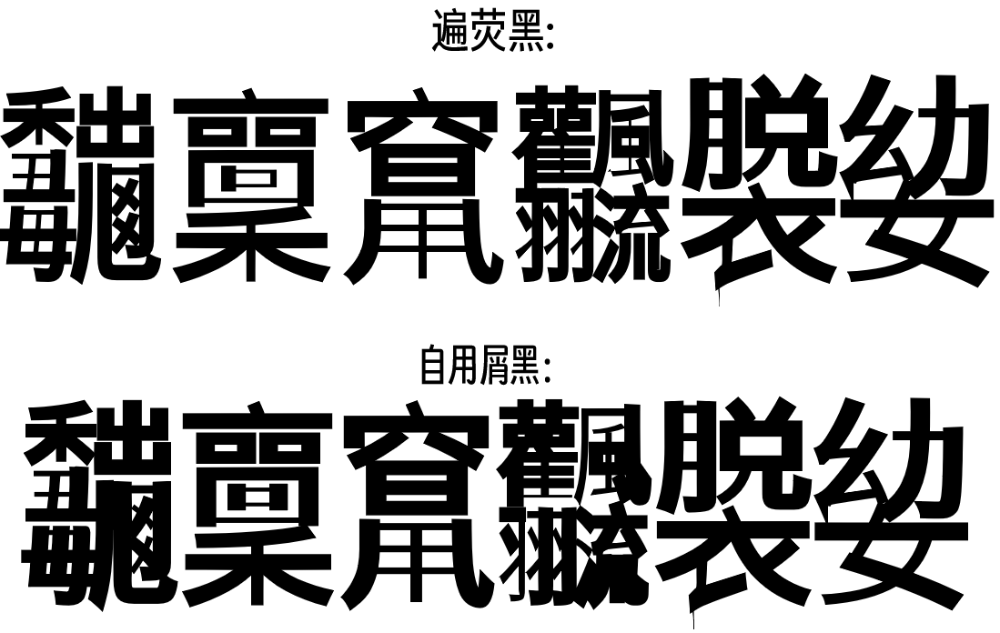

这个字体已经被自用屑窄黑代替了。
遍黑体与未来荧黑的缝合。就是把遍黑体机械压缩到80%再用字体缝合器和未来荧黑最窄体缝合起来而已。
和遍黑体（截至2022/09/06）一样，可以显示扩展FGH区所有汉字、BCD区部分汉字。
预览
注意：图中行间距经过缩小(×0.8)调整。
版本
有两个版本：
- 一个缝了明喃黑体的版本。明喃黑体来自不可商用的方正兰亭黑（a.k.a 微软雅黑），因此整个字体都不可商用。
- 一个缝了一点Noto Unicode的版本，的版本。无法显示常见喃字（罕见的倒是能显示）。所有字体都源自思源黑体，也使用SIL Open Font License 1.1发布。
每个版本还分成.ttf和.woff两个格式。
问题
- 由于字体的65536字形限制，无法显示谚文音节。但却能用OpenType特效显示古谚文和真动态组字谚文。
- 因为是机械压缩，有些字竖画比较细。本来还可以用FontCreator的加粗功能横向加粗的。可是遍黑体的笔画是拆开的，无论直接加粗还是合并字形都会出BUG。
- 某些部件折笔处自动加粗后出现“突刺”（见下图）
- 某些汉字在用了某些文本编辑器的加粗功能后，有些笔画会被减细。（亲测电脑MS word会，手机华为自带备忘录不会）
- 不同扩展区汉字间字高不统一。似乎是从遍黑体就有的问题。自用屑窄黑其实也有，但不明显，我也懒得修。

图：遍荧黑体与自用屑窄黑共同的两个问题。
下载
点此到Release页面下载
备考
有个基于未来荧黑的寒蝉高黑体，对未来荧黑进行了手动调整。要不是结合了旧字形，和遍黑体风格不兼容，我就缝进来了。
 遍荧黑体与自用屑窄黑的比较
遍荧黑体与自用屑窄黑的比较